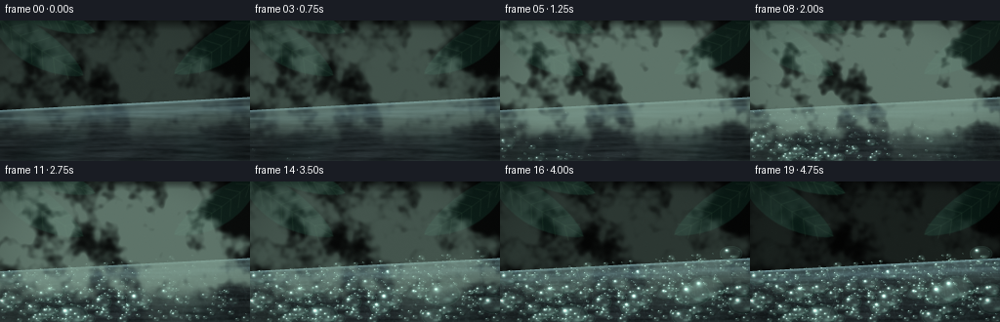
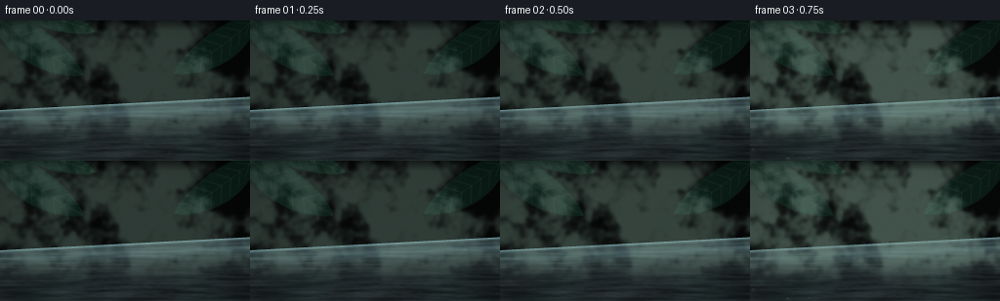
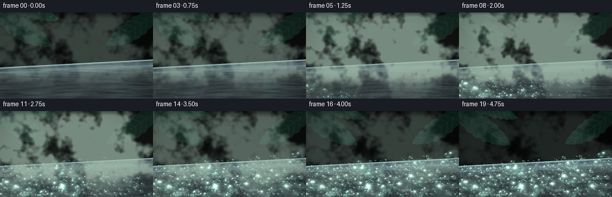
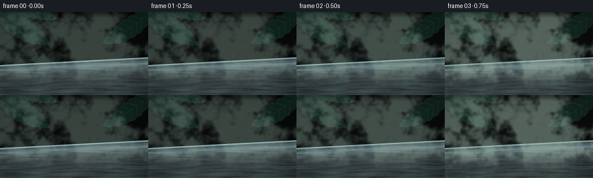
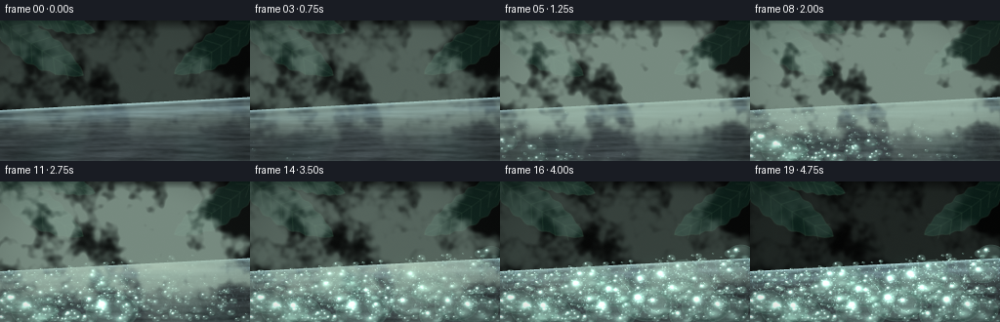
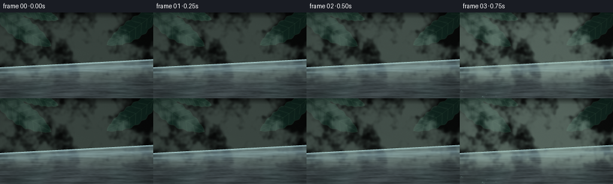
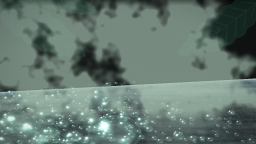

CODING AGENTS AS PIXEL WORLD MODELS
traex/DeepSeek-V4.1-Flash · phygen_113
点击播放 · 原生 RGB 像素
逐轮保存的候选
回放视频、检查图与代码变化。
每份候选均可单独播放。实际图片检查记录在下方工具轨迹中。
候选 01播放与检查图
点击播放 · 原生 RGB 像素


展开代码变化
--- 上一保存版本
+++ 本次保存版本
@@ -0,0 +1,558 @@
+from __future__ import annotations
+
+import math
+from pathlib import Path
+
+import cv2
+import numpy as np
+from PIL import Image, ImageDraw, ImageFilter
+from scipy import ndimage
+
+import artifact_io
+
+
+ROOT = Path(__file__).resolve().parent
+W, H = 256, 144
+SS = 4
+RW, RH = W * SS, H * SS
+N_FRAMES = 20
+FPS = 4.0
+
+
+def smoothstep(edge0: float, edge1: float, x):
+ t = np.clip((x - edge0) / (edge1 - edge0), 0.0, 1.0)
+ return t * t * (3.0 - 2.0 * t)
+
+
+def normalize(a: np.ndarray) -> np.ndarray:
+ low, high = np.percentile(a, [1.0, 99.0])
+ return np.clip((a - low) / max(high - low, 1e-6), 0.0, 1.0)
+
+
+def rgba_layer() -> Image.Image:
+ return Image.new("RGBA", (RW, RH), (0, 0, 0, 0))
+
+
+def leaf_polygon(
+ base: tuple[float, float],
+ length: float,
+ width: float,
+ angle_deg: float,
+ bend: float = 0.0,
+ samples: int = 36,
+) -> list[tuple[float, float]]:
+ angle = math.radians(angle_deg)
+ direction = np.array([math.cos(angle), math.sin(angle)], dtype=np.float32)
+ normal = np.array([-direction[1], direction[0]], dtype=np.float32)
+ base_v = np.array(base, dtype=np.float32)
+ left, right = [], []
+ for i in range(samples + 1):
+ t = i / samples
+ half = 0.5 * width * math.sin(math.pi * t) ** 0.72
+ center = base_v + direction * (length * t) + normal * (bend * math.sin(math.pi * t))
+ left.append(tuple(center + normal * half))
+ right.append(tuple(center - normal * half))
+ return left + right[::-1]
+
+
+def draw_leaf(
+ draw: ImageDraw.ImageDraw,
+ base: tuple[float, float],
+ length: float,
+ width: float,
+ angle: float,
+ fill: tuple[int, int, int, int],
+ vein: tuple[int, int, int, int],
+ bend: float = 0.0,
+) -> None:
+ poly = leaf_polygon(base, length, width, angle, bend)
+ draw.polygon(poly, fill=fill)
+
+ angle_r = math.radians(angle)
+ direction = np.array([math.cos(angle_r), math.sin(angle_r)], dtype=np.float32)
+ normal = np.array([-direction[1], direction[0]], dtype=np.float32)
+ base_v = np.array(base, dtype=np.float32)
+ midrib = []
+ for i in range(24):
+ t = i / 23.0
+ point = base_v + direction * (length * t) + normal * (bend * math.sin(math.pi * t))
+ midrib.append(tuple(point))
+ draw.line(midrib, fill=vein, width=max(1, int(SS * 0.45)))
+
+ for t in np.linspace(0.16, 0.82, 7):
+ center = base_v + direction * (length * t) + normal * (bend * math.sin(math.pi * t))
+ half = 0.43 * width * math.sin(math.pi * t) ** 0.72
+ for side in (-1.0, 1.0):
+ tip = center + direction * (length * 0.10) + normal * (side * half)
+ draw.line([tuple(center), tuple(tip)], fill=vein, width=max(1, int(SS * 0.35)))
+
+
+def draw_fern(
+ draw: ImageDraw.ImageDraw,
+ base: tuple[float, float],
+ length: float,
+ angle_deg: float,
+ color: tuple[int, int, int, int],
+ width: float = 2.2,
+) -> None:
+ angle = math.radians(angle_deg)
+ direction = np.array([math.cos(angle), math.sin(angle)], dtype=np.float32)
+ normal = np.array([-direction[1], direction[0]], dtype=np.float32)
+ base_v = np.array(base, dtype=np.float32)
+ stem = []
+ for i in range(24):
+ t = i / 23.0
+ stem.append(tuple(base_v + direction * (length * t) + normal * (18.0 * t * t)))
+ draw.line(stem, fill=color, width=int(width * SS), joint="curve")
+ for i in range(5, 22):
+ t = i / 23.0
+ center = base_v + direction * (length * t) + normal * (18.0 * t * t)
+ leaf_len = length * 0.18 * math.sin(math.pi * min(1.0, t * 0.95)) + 2.0
+ for side in (-1.0, 1.0):
+ tip_dir = direction * 0.38 + normal * (0.92 * side)
+ tip_dir /= np.linalg.norm(tip_dir)
+ tip = center + tip_dir * leaf_len
+ draw.line([tuple(center), tuple(tip)], fill=color, width=max(1, int(width * SS * 0.62)))
+
+
+def make_fog_texture(seed: int, low_shape: tuple[int, int] = (144, 256)) -> np.ndarray:
+ rng = np.random.default_rng(seed)
+ noise = rng.normal(size=low_shape).astype(np.float32)
+ field = np.zeros_like(noise)
+ for sigma, weight in ((2.2, 0.22), (6.0, 0.28), (14.0, 0.29), (28.0, 0.21)):
+ layer = ndimage.gaussian_filter(noise, sigma=sigma, mode="reflect")
+ field += weight * normalize(layer)
+ field = normalize(field)
+ return cv2.resize(field, (RW, RH), interpolation=cv2.INTER_CUBIC)
+
+
+def build_background() -> tuple[np.ndarray, np.ndarray]:
+ yy, xx = np.mgrid[0:RH, 0:RW].astype(np.float32)
+ xn, yn = xx / RW, yy / RH
+
+ top = np.array([0.025, 0.060, 0.048], dtype=np.float32)
+ middle = np.array([0.085, 0.165, 0.126], dtype=np.float32)
+ bottom = np.array([0.014, 0.030, 0.027], dtype=np.float32)
+ blend_up = smoothstep(0.0, 0.58, yn)[..., None]
+ blend_down = smoothstep(0.54, 1.0, yn)[..., None]
+ bg = top * (1.0 - blend_up) + middle * blend_up
+ bg = bg * (1.0 - blend_down) + bottom * blend_down
+
+ glow = np.exp(-(((xn - 0.69) / 0.34) ** 2 + ((yn - 0.23) / 0.31) ** 2))
+ bg += glow[..., None] * np.array([0.070, 0.120, 0.085], dtype=np.float32)
+ low_glow = np.exp(-(((xn - 0.53) / 0.54) ** 2 + ((yn - 0.48) / 0.20) ** 2))
+ bg += low_glow[..., None] * np.array([0.028, 0.047, 0.038], dtype=np.float32)
+
+ distant = rgba_layer()
+ d = ImageDraw.Draw(distant, "RGBA")
+
+ # Tapered trunks establish depth without overpowering the fog.
+ for cx, width, shade in (
+ (0.115, 0.055, (20, 31, 27, 205)),
+ (0.245, 0.026, (17, 29, 25, 160)),
+ (0.835, 0.070, (18, 30, 27, 225)),
+ (0.925, 0.032, (22, 34, 29, 175)),
+ ):
+ x = cx * RW
+ half = width * RW * 0.5
+ poly = [
+ (x - half * 0.65, 0),
+ (x + half * 0.65, 0),
+ (x + half, RH * 0.77),
+ (x - half, RH * 0.77),
+ ]
+ d.polygon(poly, fill=shade)
+ d.line([(x - half * 0.35, 0), (x - half * 0.75, RH * 0.74)], fill=(57, 73, 62, 80), width=2 * SS)
+
+ distant_leaves = [
+ ((0.10, 0.22), 0.28, 0.070, -28, (18, 42, 33, 175), 0.025),
+ ((0.04, 0.30), 0.25, 0.060, 20, (21, 48, 38, 185), -0.020),
+ ((0.74, 0.13), 0.29, 0.075, 152, (21, 48, 37, 180), 0.025),
+ ((0.93, 0.20), 0.26, 0.065, 205, (17, 41, 33, 190), -0.020),
+ ((0.53, 0.18), 0.24, 0.052, -12, (24, 52, 41, 155), 0.015),
+ ((0.63, 0.30), 0.22, 0.050, 175, (19, 45, 35, 155), 0.010),
+ ]
+ for base, length, width, angle, fill, bend in distant_leaves:
+ draw_leaf(
+ d,
+ (base[0] * RW, base[1] * RH),
+ length * RW,
+ width * RW,
+ angle,
+ fill,
+ (48, 74, 60, 58),
+ bend * RW,
+ )
+ distant = distant.filter(ImageFilter.GaussianBlur(7.0 * SS))
+ bg = bg * (1.0 - 0.62) + np.asarray(distant, dtype=np.float32)[..., :3] / 255.0 * 0.62
+
+ mid = rgba_layer()
+ md = ImageDraw.Draw(mid, "RGBA")
+ mid_leaves = [
+ ((0.005, 0.37), 0.25, 0.080, -42, (10, 30, 23, 238), (42, 70, 52, 85), 0.018),
+ ((0.02, 0.61), 0.22, 0.064, -68, (8, 26, 20, 245), (39, 67, 49, 78), 0.012),
+ ((0.91, 0.43), 0.24, 0.075, 205, (10, 29, 23, 240), (43, 70, 52, 82), 0.015),
+ ((0.86, 0.59), 0.20, 0.060, 157, (9, 27, 21, 242), (42, 68, 50, 76), -0.010),
+ ]
+ for base, length, width, angle, fill, vein, bend in mid_leaves:
+ draw_leaf(
+ md,
+ (base[0] * RW, base[1] * RH),
+ length * RW,
+ width * RW,
+ angle,
+ fill,
+ vein,
+ bend * RW,
+ )
+ draw_fern(md, (0.12 * RW, 0.77 * RH), 0.36 * RW, -64, (8, 28, 20, 245), 2.4)
+ draw_fern(md, (0.91 * RW, 0.72 * RH), 0.31 * RW, 222, (9, 29, 21, 238), 2.0)
+ mid = mid.filter(ImageFilter.GaussianBlur(1.4 * SS))
+ bg = bg * (1.0 - 0.90) + np.asarray(mid, dtype=np.float32)[..., :3] / 255.0 * 0.90
+
+ foreground = rgba_layer()
+ fd = ImageDraw.Draw(foreground, "RGBA")
+ draw_leaf(
+ fd,
+ (-0.06 * RW, -0.10 * RH),
+ 0.48 * RW,
+ 0.145 * RW,
+ 35,
+ (6, 22, 17, 250),
+ (43, 72, 52, 90),
+ 0.015 * RW,
+ )
+ draw_leaf(
+ fd,
+ (0.06 * RW, -0.06 * RH),
+ 0.33 * RW,
+ 0.090 * RW,
+ 14,
+ (8, 27, 20, 242),
+ (48, 78, 57, 85),
+ -0.012 * RW,
+ )
+ draw_leaf(
+ fd,
+ (1.05 * RW, -0.06 * RH),
+ 0.43 * RW,
+ 0.130 * RW,
+ 145,
+ (6, 22, 17, 250),
+ (46, 74, 55, 88),
+ -0.016 * RW,
+ )
+ foreground = foreground.filter(ImageFilter.GaussianBlur(0.45 * SS))
+ bg = bg * (1.0 - 0.96) + np.asarray(foreground, dtype=np.float32)[..., :3] / 255.0 * 0.96
+
+ rng = np.random.default_rng(9031)
+ bg += (rng.normal(size=(RH, RW, 1)).astype(np.float32) * 0.004)
+ return np.clip(bg, 0.0, 1.0), xn
+
+
+def build_plate_textures(
+ background: np.ndarray, xn: np.ndarray, yn: np.ndarray
+) -> tuple[np.ndarray, np.ndarray, np.ndarray, np.ndarray, np.ndarray]:
+ top_y_norm = 0.638 - 0.094 * xn
+ top_y = top_y_norm * RH
+ plate_mask = yy_ge(yyn(yn), top_y)
+ depth = np.clip((yyn(yn) - top_y) / np.maximum(RH - top_y, 1.0), 0.0, 1.0)
+
+ rng = np.random.default_rng(44117)
+ coarse = rng.normal(size=(RH, RW)).astype(np.float32)
+ brushed = normalize(ndimage.gaussian_filter(coarse, sigma=(0.8 * SS, 13.0 * SS), mode="reflect"))
+ fine = normalize(ndimage.gaussian_filter(rng.normal(size=(RH, RW)), sigma=(0.45 * SS, 2.2 * SS), mode="reflect"))
+ mottling = normalize(ndimage.gaussian_filter(rng.normal(size=(RH, RW)), sigma=(9.0 * SS, 9.0 * SS), mode="reflect"))
+
+ reflection = ndimage.gaussian_filter(background, sigma=(5.0 * SS, 5.0 * SS, 0), mode="reflect")
+ sample_y = np.clip((0.55 - 0.31 * depth) * RH, 0, RH - 1).astype(np.int32)
+ sample_x = np.clip(xx_array(xn), 0, RW - 1).astype(np.int32)
+ reflected = reflection[sample_y, sample_x]
+
+ base = np.array([0.115, 0.142, 0.150], dtype=np.float32)
+ plate = np.broadcast_to(base, (RH, RW, 3)).copy()
+ plate += reflected * (0.20 + 0.20 * (1.0 - depth) ** 2)[..., None]
+ plate += (brushed[..., None] - 0.5) * np.array([0.070, 0.078, 0.080], dtype=np.float32)
+ plate += (fine[..., None] - 0.5) * np.array([0.025, 0.030, 0.032], dtype=np.float32)
+ plate += (mottling[..., None] - 0.5) * np.array([0.018, 0.020, 0.021], dtype=np.float32)
+
+ sheen = np.exp(-((depth - 0.16) / 0.12) ** 2)
+ sheen *= 0.65 + 0.35 * brushed
+ plate += sheen[..., None] * np.array([0.16, 0.225, 0.240], dtype=np.float32)
+
+ back_reflection = np.exp(-depth / 0.095)
+ plate += back_reflection[..., None] * reflected * 0.20
+ edge = np.exp(-((yyn(yn) - top_y) / (2.1 * SS)) ** 2)
+ plate += edge[..., None] * np.array([0.33, 0.46, 0.48], dtype=np.float32)
+ plate *= (0.92 + 0.08 * depth)[..., None]
+
+ # Fine anisotropy follows the plate's receding direction.
+ streak_phase = (xn * 7.5 + depth * 0.8) * np.pi
+ streak = (0.5 + 0.5 * np.sin(streak_phase)) * brushed
+ plate += (streak[..., None] - 0.30) * np.array([0.012, 0.014, 0.014], dtype=np.float32)
+
+ return plate, plate_mask, depth, top_y, brushed
+
+
+def yyn(yn: np.ndarray) -> np.ndarray:
+ return yn * RH
+
+
+def xx_array(xn: np.ndarray) -> np.ndarray:
+ return xn * RW
+
+
+def yy_ge(yy: np.ndarray, top_y: np.ndarray) -> np.ndarray:
+ return yy >= top_y
+
+
+def make_droplets() -> list[dict[str, float]]:
+ rng = np.random.default_rng(7319)
+ droplets: list[dict[str, float]] = []
+
+ groups = (
+ (230, 1.7, 4.5, 0.00),
+ (145, 3.4, 8.5, 0.02),
+ (35, 7.0, 16.0, 0.08),
+ (10, 15.0, 31.0, 0.12),
+ )
+ for count, rmin, rmax, birth_bias in groups:
+ for _ in range(count):
+ u = float(np.clip(rng.beta(1.15, 1.15), 0.015, 0.985))
+ v = float(np.clip(rng.beta(1.08, 1.18), 0.035, 0.965))
+ radius = rng.uniform(rmin, rmax) * (0.72 + 0.68 * v) * SS * 0.60
+ priority = 0.62 * u + 0.38 * (1.0 - v)
+ birth = 0.10 + 0.55 * priority + birth_bias + rng.normal(0.0, 0.055)
+ droplets.append(
+ {
+ "u": u,
+ "v": v,
+ "r": float(radius),
+ "birth": float(np.clip(birth, 0.08, 0.83)),
+ "grow": float(rng.uniform(0.11, 0.19)),
+ "tilt": float(rng.normal(0.0, 0.08)),
+ }
+ )
+ return droplets
+
+
+def draw_droplets(
+ image: np.ndarray,
+ top_y: np.ndarray,
+ depth: np.ndarray,
+ droplets: list[dict[str, float]],
+ progress: float,
+) -> np.ndarray:
+ out = image.copy()
+ env = np.array([0.52, 0.69, 0.64], dtype=np.float32)
+ for drop in droplets:
+ alpha = float(smoothstep(drop["birth"], drop["birth"] + drop["grow"], progress))
+ if alpha <= 0.005:
+ continue
+ cx = drop["u"] * RW
+ back_y = 0.638 * RH - 0.094 * cx
+ cy = back_y + drop["v"] * (RH - back_y)
+ radius = drop["r"] * (0.45 + 0.55 * alpha)
+ if radius < 0.7:
+ continue
+ rx = radius
+ ry = radius * (0.68 + 0.10 * drop["tilt"])
+ pad = max(2.0, 0.12 * radius)
+ x0 = max(0, int(math.floor(cx - rx - pad)))
+ x1 = min(RW, int(math.ceil(cx + rx + pad)))
+ y0 = max(0, int(math.floor(cy - ry - pad)))
+ y1 = min(RH, int(math.ceil(cy + ry + pad)))
+ if x0 >= x1 or y0 >= y1:
+ continue
+
+ local_y, local_x = np.mgrid[y0:y1, x0:x1].astype(np.float32)
+ dx = (local_x + 0.5 - cx) / rx
+ dy = (local_y + 0.5 - cy) / ry
+ rr = np.sqrt(dx * dx + dy * dy)
+ coverage = np.clip((1.02 - rr) * min(rx, ry) * 1.25, 0.0, 1.0)
+ if not np.any(coverage > 0.0):
+ continue
+
+ crop = out[y0:y1, x0:x1]
+ water = crop * 0.78 + env[None, None, :] * 0.20
+ rim = np.exp(-((rr - 0.88) / 0.105) ** 2)
+ water -= rim[..., None] * (0.055 + 0.030 * np.clip(dx + dy, 0.0, 1.0))[..., None]
+
+ highlight = np.exp(
+ -(((dx + 0.36) / 0.20) ** 2 + ((dy + 0.39) / 0.25) ** 2)
+ )
+ hot = np.exp(
+ -(((dx + 0.40) / 0.085) ** 2 + ((dy + 0.44) / 0.105) ** 2)
+ )
+ caustic = np.exp(
+ -(((dx - 0.31) / 0.25) ** 2 + ((dy - 0.43) / 0.19) ** 2)
+ )
+ water += highlight[..., None] * np.array([0.26, 0.36, 0.34], dtype=np.float32)
+ water += hot[..., None] * np.array([0.52, 0.62, 0.60], dtype=np.float32)
+ water += caustic[..., None] * np.array([0.10, 0.15, 0.13], dtype=np.float32)
+
+ blend = coverage * alpha
+ crop[:] = crop * (1.0 - blend[..., None]) + water * blend[..., None]
+ crop[:] += (highlight * 0.35 + hot * 0.55 + caustic * 0.12)[..., None] * blend[..., None] * np.array(
+ [0.55, 0.72, 0.68], dtype=np.float32
+ )
+ return out
+
+
+def apply_mist(
+ image: np.ndarray,
+ fog_a: np.ndarray,
+ fog_b: np.ndarray,
+ progress: float,
+ plate_mask: np.ndarray,
+ depth: np.ndarray,
+) -> tuple[np.ndarray, np.ndarray]:
+ fog_a_moved = ndimage.shift(
+ fog_a,
+ shift=(-0.006 * RH * progress, 0.070 * RW * progress),
+ order=1,
+ mode="reflect",
+ )
+ fog_b_moved = ndimage.shift(
+ fog_b,
+ shift=(0.010 * RH * progress, -0.035 * RW * progress),
+ order=1,
+ mode="reflect",
+ )
+ wisps = 0.70 * fog_a_moved + 0.30 * fog_b_moved
+ wisps = smoothstep(0.20, 0.77, wisps)
+
+ yy = np.mgrid[0:RH, 0:RW][0].astype(np.float32)
+ yn = yy / RH
+ vertical = smoothstep(-0.06, 0.13, yn) * (1.0 - smoothstep(0.70, 0.91, yn))
+ vertical += 0.22 * (1.0 - smoothstep(0.10, 0.47, yn))
+ vertical = np.clip(vertical, 0.0, 1.0)
+
+ approach = smoothstep(0.0, 0.28, progress)
+ pulse = np.exp(-((progress - 0.42) / 0.27) ** 2)
+ clearing = smoothstep(0.72, 1.0, progress)
+ density = (0.38 + 0.72 * approach * pulse) * (1.0 - 0.48 * clearing)
+ alpha = np.clip(density * (0.10 + 0.82 * wisps) * vertical, 0.0, 0.72)
+
+ fog_color = np.array([0.49, 0.61, 0.55], dtype=np.float32)
+ bright_fog = np.clip(0.70 + 0.40 * wisps, 0.0, 1.0)
+ fog_rgb = fog_color[None, None, :] * bright_fog[..., None]
+ out = image * (1.0 - alpha[..., None]) + fog_rgb * alpha[..., None]
+
+ contact = smoothstep(0.10, 0.35, progress) * (1.0 - smoothstep(0.66, 0.95, progress))
+ surface_alpha = contact * wisps * (0.16 + 0.23 * (1.0 - depth)) * plate_mask
+ surface_alpha = np.clip(surface_alpha, 0.0, 0.38)
+ out = out * (1.0 - surface_alpha[..., None]) + fog_rgb * surface_alpha[..., None]
+ return out, wisps
+
+
+def add_surface_film(
+ image: np.ndarray,
+ plate_mask: np.ndarray,
+ depth: np.ndarray,
+ film_noise: np.ndarray,
+ progress: float,
+) -> np.ndarray:
+ wet = smoothstep(0.18, 0.88, progress)
+ front = smoothstep(0.16, 0.80, progress)
+ micro = smoothstep(0.52, 0.78, film_noise) * (0.35 + 0.65 * (1.0 - depth))
+ speckle = micro * front * plate_mask
+ out = image.copy()
+ out *= (1.0 - (0.030 + 0.035 * wet) * plate_mask)[..., None]
+ out += speckle[..., None] * np.array([0.050, 0.072, 0.070], dtype=np.float32)
+
+ sheen = np.exp(-((depth - 0.12) / 0.10) ** 2) * wet * plate_mask
+ out += sheen[..., None] * np.array([0.018, 0.030, 0.032], dtype=np.float32)
+ return out
+
+
+def add_rivulets(
+ image: np.ndarray,
+ plate_mask: np.ndarray,
+ progress: float,
+) -> np.ndarray:
+ amount = smoothstep(0.63, 0.92, progress)
+ if amount <= 0.0:
+ return image
+ yy, xx = np.mgrid[0:RH, 0:RW].astype(np.float32)
+ out = image.copy()
+ for x_norm, y_start, amplitude, phase, width in (
+ (0.33, 0.25, 4.0 * SS, 0.4, 1.1 * SS),
+ (0.59, 0.34, 3.0 * SS, 2.1, 0.9 * SS),
+ (0.79, 0.29, 2.5 * SS, 4.4, 0.8 * SS),
+ ):
+ xc = x_norm * RW + amplitude * np.sin((yy / RH) * 17.0 + phase)
+ path = np.exp(-((xx - xc) / width) ** 2)
+ vertical = smoothstep(y_start * RH, (y_start + 0.04) * RH, yy)
+ vertical *= 1.0 - smoothstep(0.91 * RH, RH, yy)
+ mask = path * vertical * plate_mask * amount
+ highlight = np.exp(-((xx - (xc - 1.2 * SS)) / (0.45 * SS)) ** 2) * mask
+ out *= (1.0 - 0.055 * mask)[..., None]
+ out += highlight[..., None] * np.array([0.14, 0.19, 0.18], dtype=np.float32)
+ return out
+
+
+def finish_frame(
+ image: np.ndarray,
+ plate_mask: np.ndarray,
+ frame_index: int,
+) -> np.ndarray:
+ image = np.clip(image, 0.0, 1.0)
+ bright = np.clip((image - 0.66) / 0.34, 0.0, 1.0)
+ bloom = ndimage.gaussian_filter(bright, sigma=(9.0 * SS, 9.0 * SS, 0), mode="reflect")
+ image += bloom * 0.075
+
+ yy, xx = np.mgrid[0:RH, 0:RW].astype(np.float32)
+ xn, yn = xx / RW, yy / RH
+ radius = np.sqrt(((xn - 0.50) / 0.72) ** 2 + ((yn - 0.48) / 0.72) ** 2)
+ vignette = 1.0 - 0.22 * smoothstep(0.48, 1.05, radius)
+ image *= vignette[..., None]
+
+ luminance = image @ np.array([0.2126, 0.7152, 0.0722], dtype=np.float32)
+ shadows = (1.0 - smoothstep(0.08, 0.52, luminance))[..., None]
+ highlights = smoothstep(0.48, 0.92, luminance)[..., None]
+ image *= 1.0 + shadows * np.array([-0.018, 0.008, 0.012], dtype=np.float32)
+ image *= 1.0 + highlights * np.array([0.018, 0.014, -0.010], dtype=np.float32)
+
+ image = np.clip(image, 0.0, 1.0) ** 0.96
+ rng = np.random.default_rng(1200 + frame_index)
+ image += rng.normal(0.0, 0.0035, size=(RH, RW, 1)).astype(np.float32)
+ image = np.clip(image, 0.0, 1.0)
+
+ small = cv2.resize(image, (W, H), interpolation=cv2.INTER_AREA)
+ soft = cv2.GaussianBlur(small, (0, 0), 0.55)
+ small = np.clip(small + 0.32 * (small - soft), 0.0, 1.0)
+ return np.round(small * 255.0).astype(np.uint8)
+
+
+def main() -> None:
+ background, xn = build_background()
+ yy, xx = np.mgrid[0:RH, 0:RW].astype(np.float32)
+ yn = yy / RH
+ plate, plate_mask, depth, top_y, brushed = build_plate_textures(background, xn, yn)
+ droplets = make_droplets()
+
+ fog_a = make_fog_texture(2251)
+ fog_b = make_fog_texture(9983)
+ rng = np.random.default_rng(771)
+ film_noise = normalize(
+ ndimage.gaussian_filter(rng.normal(size=(RH, RW)), sigma=(0.75 * SS, 0.75 * SS), mode="reflect")
+ )
+
+ frames = []
+ for frame_index in range(N_FRAMES):
+ progress = frame_index / (N_FRAMES - 1)
+ image = background.copy()
+ image = np.where(plate_mask[..., None], plate, image)
+ image = add_surface_film(image, plate_mask, depth, film_noise, progress)
+ image = draw_droplets(image, top_y, depth, droplets, progress)
+ image = add_rivulets(image, plate_mask, progress)
+ image, _ = apply_mist(image, fog_a, fog_b, progress, plate_mask, depth)
+ frames.append(finish_frame(image, plate_mask, frame_index))
+
+ artifact_io.save(frames, ROOT)
+ print(f"Wrote {len(frames)} frames to {ROOT}")
+
+
+if __name__ == "__main__":
+ main()
候选 02播放与检查图
点击播放 · 原生 RGB 像素


展开代码变化
--- 上一保存版本
+++ 本次保存版本
@@ -48,7 +48,8 @@
left, right = [], []
for i in range(samples + 1):
t = i / samples
- half = 0.5 * width * math.sin(math.pi * t) ** 0.72
+ serration = 1.0 + 0.075 * math.sin(15.0 * math.pi * t + 0.8)
+ half = 0.5 * width * math.sin(math.pi * t) ** 0.72 * serration
center = base_v + direction * (length * t) + normal * (bend * math.sin(math.pi * t))
left.append(tuple(center + normal * half))
right.append(tuple(center - normal * half))
@@ -67,6 +68,7 @@
) -> None:
poly = leaf_polygon(base, length, width, angle, bend)
draw.polygon(poly, fill=fill)
+ draw.line(poly + [poly[0]], fill=vein, width=max(1, int(SS * 0.34)))
angle_r = math.radians(angle)
direction = np.array([math.cos(angle_r), math.sin(angle_r)], dtype=np.float32)
@@ -130,18 +132,27 @@
yy, xx = np.mgrid[0:RH, 0:RW].astype(np.float32)
xn, yn = xx / RW, yy / RH
- top = np.array([0.025, 0.060, 0.048], dtype=np.float32)
- middle = np.array([0.085, 0.165, 0.126], dtype=np.float32)
- bottom = np.array([0.014, 0.030, 0.027], dtype=np.float32)
+ top = np.array([0.035, 0.075, 0.059], dtype=np.float32)
+ middle = np.array([0.105, 0.200, 0.153], dtype=np.float32)
+ bottom = np.array([0.020, 0.043, 0.037], dtype=np.float32)
blend_up = smoothstep(0.0, 0.58, yn)[..., None]
blend_down = smoothstep(0.54, 1.0, yn)[..., None]
bg = top * (1.0 - blend_up) + middle * blend_up
bg = bg * (1.0 - blend_down) + bottom * blend_down
glow = np.exp(-(((xn - 0.69) / 0.34) ** 2 + ((yn - 0.23) / 0.31) ** 2))
- bg += glow[..., None] * np.array([0.070, 0.120, 0.085], dtype=np.float32)
+ bg += glow[..., None] * np.array([0.120, 0.185, 0.130], dtype=np.float32)
low_glow = np.exp(-(((xn - 0.53) / 0.54) ** 2 + ((yn - 0.48) / 0.20) ** 2))
- bg += low_glow[..., None] * np.array([0.028, 0.047, 0.038], dtype=np.float32)
+ bg += low_glow[..., None] * np.array([0.045, 0.072, 0.056], dtype=np.float32)
+
+ for center, spread, strength in (
+ (0.68, 0.075, 0.12),
+ (0.77, 0.120, 0.07),
+ (0.59, 0.045, 0.06),
+ ):
+ ray = np.exp(-((xn - (center - 0.17 * yn)) / spread) ** 2)
+ ray *= smoothstep(0.02, 0.22, yn) * (1.0 - smoothstep(0.45, 0.73, yn))
+ bg += ray[..., None] * np.array([strength * 0.55, strength, strength * 0.72], dtype=np.float32)
distant = rgba_layer()
d = ImageDraw.Draw(distant, "RGBA")
@@ -193,6 +204,8 @@
((0.02, 0.61), 0.22, 0.064, -68, (8, 26, 20, 245), (39, 67, 49, 78), 0.012),
((0.91, 0.43), 0.24, 0.075, 205, (10, 29, 23, 240), (43, 70, 52, 82), 0.015),
((0.86, 0.59), 0.20, 0.060, 157, (9, 27, 21, 242), (42, 68, 50, 76), -0.010),
+ ((0.56, 0.48), 0.15, 0.047, 192, (13, 35, 27, 205), (48, 78, 58, 72), -0.008),
+ ((0.66, 0.53), 0.12, 0.038, 159, (15, 38, 30, 190), (51, 82, 61, 64), 0.006),
]
for base, length, width, angle, fill, vein, bend in mid_leaves:
draw_leaf(
@@ -207,6 +220,7 @@
)
draw_fern(md, (0.12 * RW, 0.77 * RH), 0.36 * RW, -64, (8, 28, 20, 245), 2.4)
draw_fern(md, (0.91 * RW, 0.72 * RH), 0.31 * RW, 222, (9, 29, 21, 238), 2.0)
+ draw_fern(md, (0.22 * RW, 0.69 * RH), 0.24 * RW, -54, (9, 31, 22, 210), 1.6)
mid = mid.filter(ImageFilter.GaussianBlur(1.4 * SS))
bg = bg * (1.0 - 0.90) + np.asarray(mid, dtype=np.float32)[..., :3] / 255.0 * 0.90
@@ -269,27 +283,29 @@
sample_x = np.clip(xx_array(xn), 0, RW - 1).astype(np.int32)
reflected = reflection[sample_y, sample_x]
- base = np.array([0.115, 0.142, 0.150], dtype=np.float32)
+ base = np.array([0.175, 0.205, 0.214], dtype=np.float32)
plate = np.broadcast_to(base, (RH, RW, 3)).copy()
- plate += reflected * (0.20 + 0.20 * (1.0 - depth) ** 2)[..., None]
- plate += (brushed[..., None] - 0.5) * np.array([0.070, 0.078, 0.080], dtype=np.float32)
- plate += (fine[..., None] - 0.5) * np.array([0.025, 0.030, 0.032], dtype=np.float32)
- plate += (mottling[..., None] - 0.5) * np.array([0.018, 0.020, 0.021], dtype=np.float32)
+ plate += reflected * (0.25 + 0.22 * (1.0 - depth) ** 2)[..., None]
+ plate += (brushed[..., None] - 0.5) * np.array([0.085, 0.094, 0.098], dtype=np.float32)
+ plate += (fine[..., None] - 0.5) * np.array([0.031, 0.036, 0.038], dtype=np.float32)
+ plate += (mottling[..., None] - 0.5) * np.array([0.022, 0.025, 0.026], dtype=np.float32)
sheen = np.exp(-((depth - 0.16) / 0.12) ** 2)
sheen *= 0.65 + 0.35 * brushed
- plate += sheen[..., None] * np.array([0.16, 0.225, 0.240], dtype=np.float32)
+ plate += sheen[..., None] * np.array([0.20, 0.275, 0.295], dtype=np.float32)
back_reflection = np.exp(-depth / 0.095)
plate += back_reflection[..., None] * reflected * 0.20
edge = np.exp(-((yyn(yn) - top_y) / (2.1 * SS)) ** 2)
- plate += edge[..., None] * np.array([0.33, 0.46, 0.48], dtype=np.float32)
- plate *= (0.92 + 0.08 * depth)[..., None]
+ plate += edge[..., None] * np.array([0.44, 0.58, 0.60], dtype=np.float32)
+ lower_lip = np.exp(-((yyn(yn) - top_y - 4.0 * SS) / (1.8 * SS)) ** 2)
+ plate -= lower_lip[..., None] * np.array([0.070, 0.082, 0.084], dtype=np.float32)
+ plate *= (0.93 + 0.07 * depth)[..., None]
# Fine anisotropy follows the plate's receding direction.
streak_phase = (xn * 7.5 + depth * 0.8) * np.pi
streak = (0.5 + 0.5 * np.sin(streak_phase)) * brushed
- plate += (streak[..., None] - 0.30) * np.array([0.012, 0.014, 0.014], dtype=np.float32)
+ plate += (streak[..., None] - 0.30) * np.array([0.017, 0.019, 0.019], dtype=np.float32)
return plate, plate_mask, depth, top_y, brushed
@@ -311,10 +327,10 @@
droplets: list[dict[str, float]] = []
groups = (
- (230, 1.7, 4.5, 0.00),
- (145, 3.4, 8.5, 0.02),
- (35, 7.0, 16.0, 0.08),
- (10, 15.0, 31.0, 0.12),
+ (235, 2.0, 5.2, 0.00),
+ (150, 4.2, 10.0, 0.02),
+ (40, 8.5, 19.0, 0.07),
+ (13, 18.0, 36.0, 0.10),
)
for count, rmin, rmax, birth_bias in groups:
for _ in range(count):
@@ -431,17 +447,17 @@
approach = smoothstep(0.0, 0.28, progress)
pulse = np.exp(-((progress - 0.42) / 0.27) ** 2)
clearing = smoothstep(0.72, 1.0, progress)
- density = (0.38 + 0.72 * approach * pulse) * (1.0 - 0.48 * clearing)
+ density = (0.34 + 0.82 * approach * pulse) * (1.0 - 0.50 * clearing)
alpha = np.clip(density * (0.10 + 0.82 * wisps) * vertical, 0.0, 0.72)
- fog_color = np.array([0.49, 0.61, 0.55], dtype=np.float32)
+ fog_color = np.array([0.58, 0.69, 0.63], dtype=np.float32)
bright_fog = np.clip(0.70 + 0.40 * wisps, 0.0, 1.0)
fog_rgb = fog_color[None, None, :] * bright_fog[..., None]
out = image * (1.0 - alpha[..., None]) + fog_rgb * alpha[..., None]
- contact = smoothstep(0.10, 0.35, progress) * (1.0 - smoothstep(0.66, 0.95, progress))
- surface_alpha = contact * wisps * (0.16 + 0.23 * (1.0 - depth)) * plate_mask
- surface_alpha = np.clip(surface_alpha, 0.0, 0.38)
+ contact = smoothstep(0.08, 0.30, progress) * (1.0 - smoothstep(0.69, 0.96, progress))
+ surface_alpha = contact * wisps * (0.21 + 0.27 * (1.0 - depth)) * plate_mask
+ surface_alpha = np.clip(surface_alpha, 0.0, 0.44)
out = out * (1.0 - surface_alpha[..., None]) + fog_rgb * surface_alpha[..., None]
return out, wisps
@@ -492,6 +508,34 @@
return out
+def add_condensation_clusters(
+ image: np.ndarray,
+ plate_mask: np.ndarray,
+ depth: np.ndarray,
+ progress: float,
+) -> np.ndarray:
+ cluster = smoothstep(0.34, 0.86, progress)
+ if cluster <= 0.0:
+ return image
+
+ yy, xx = np.mgrid[0:RH, 0:RW].astype(np.float32)
+ rng = np.random.default_rng(1843)
+ texture = rng.normal(size=(RH, RW)).astype(np.float32)
+ texture = normalize(ndimage.gaussian_filter(texture, sigma=(0.55 * SS, 0.55 * SS), mode="reflect"))
+ glints = smoothstep(0.73, 0.86, texture)
+ glints *= (0.40 + 0.60 * np.sin(xx * 0.43 + yy * 0.21) ** 2)
+ glints *= (1.0 - smoothstep(0.64, 1.0, depth)) * plate_mask * cluster
+
+ waves = 0.5 + 0.5 * np.sin(xx * 0.52 + np.sin(yy * 0.18) * 2.0)
+ flecks = smoothstep(0.84, 0.94, texture) * smoothstep(0.46, 0.80, waves)
+ flecks *= plate_mask * smoothstep(0.45, 0.90, progress) * (1.0 - 0.40 * depth)
+
+ out = image.copy()
+ out += glints[..., None] * np.array([0.18, 0.25, 0.245], dtype=np.float32)
+ out += flecks[..., None] * np.array([0.10, 0.14, 0.135], dtype=np.float32)
+ return out
+
+
def finish_frame(
image: np.ndarray,
plate_mask: np.ndarray,
@@ -499,8 +543,8 @@
) -> np.ndarray:
image = np.clip(image, 0.0, 1.0)
bright = np.clip((image - 0.66) / 0.34, 0.0, 1.0)
- bloom = ndimage.gaussian_filter(bright, sigma=(9.0 * SS, 9.0 * SS, 0), mode="reflect")
- image += bloom * 0.075
+ bloom = ndimage.gaussian_filter(bright, sigma=(8.0 * SS, 8.0 * SS, 0), mode="reflect")
+ image += bloom * 0.095
yy, xx = np.mgrid[0:RH, 0:RW].astype(np.float32)
xn, yn = xx / RW, yy / RH
@@ -511,17 +555,17 @@
luminance = image @ np.array([0.2126, 0.7152, 0.0722], dtype=np.float32)
shadows = (1.0 - smoothstep(0.08, 0.52, luminance))[..., None]
highlights = smoothstep(0.48, 0.92, luminance)[..., None]
- image *= 1.0 + shadows * np.array([-0.018, 0.008, 0.012], dtype=np.float32)
+ image *= 1.0 + shadows * np.array([-0.020, 0.010, 0.014], dtype=np.float32)
image *= 1.0 + highlights * np.array([0.018, 0.014, -0.010], dtype=np.float32)
- image = np.clip(image, 0.0, 1.0) ** 0.96
+ image = np.clip(image, 0.0, 1.0) ** 0.88
rng = np.random.default_rng(1200 + frame_index)
image += rng.normal(0.0, 0.0035, size=(RH, RW, 1)).astype(np.float32)
image = np.clip(image, 0.0, 1.0)
small = cv2.resize(image, (W, H), interpolation=cv2.INTER_AREA)
soft = cv2.GaussianBlur(small, (0, 0), 0.55)
- small = np.clip(small + 0.32 * (small - soft), 0.0, 1.0)
+ small = np.clip(small + 0.38 * (small - soft), 0.0, 1.0)
return np.round(small * 255.0).astype(np.uint8)
@@ -547,6 +591,7 @@
image = add_surface_film(image, plate_mask, depth, film_noise, progress)
image = draw_droplets(image, top_y, depth, droplets, progress)
image = add_rivulets(image, plate_mask, progress)
+ image = add_condensation_clusters(image, plate_mask, depth, progress)
image, _ = apply_mist(image, fog_a, fog_b, progress, plate_mask, depth)
frames.append(finish_frame(image, plate_mask, frame_index))
候选 03播放与检查图
点击播放 · 原生 RGB 像素


展开代码变化
--- 上一保存版本
+++ 本次保存版本
@@ -300,7 +300,8 @@
plate += edge[..., None] * np.array([0.44, 0.58, 0.60], dtype=np.float32)
lower_lip = np.exp(-((yyn(yn) - top_y - 4.0 * SS) / (1.8 * SS)) ** 2)
plate -= lower_lip[..., None] * np.array([0.070, 0.082, 0.084], dtype=np.float32)
- plate *= (0.93 + 0.07 * depth)[..., None]
+ plate *= (0.95 + 0.05 * depth)[..., None]
+ plate += 0.018
# Fine anisotropy follows the plate's receding direction.
streak_phase = (xn * 7.5 + depth * 0.8) * np.pi
@@ -349,6 +350,19 @@
"tilt": float(rng.normal(0.0, 0.08)),
}
)
+ for _ in range(9):
+ u = float(rng.uniform(0.05, 0.95))
+ v = float(rng.uniform(0.28, 0.86))
+ droplets.append(
+ {
+ "u": u,
+ "v": v,
+ "r": float(rng.uniform(24.0, 46.0) * SS * 0.60),
+ "birth": float(rng.uniform(0.50, 0.72)),
+ "grow": float(rng.uniform(0.13, 0.22)),
+ "tilt": float(rng.normal(0.0, 0.06)),
+ }
+ )
return droplets
@@ -390,7 +404,7 @@
continue
crop = out[y0:y1, x0:x1]
- water = crop * 0.78 + env[None, None, :] * 0.20
+ water = crop * 0.70 + env[None, None, :] * 0.29
rim = np.exp(-((rr - 0.88) / 0.105) ** 2)
water -= rim[..., None] * (0.055 + 0.030 * np.clip(dx + dy, 0.0, 1.0))[..., None]
@@ -403,13 +417,13 @@
caustic = np.exp(
-(((dx - 0.31) / 0.25) ** 2 + ((dy - 0.43) / 0.19) ** 2)
)
- water += highlight[..., None] * np.array([0.26, 0.36, 0.34], dtype=np.float32)
- water += hot[..., None] * np.array([0.52, 0.62, 0.60], dtype=np.float32)
- water += caustic[..., None] * np.array([0.10, 0.15, 0.13], dtype=np.float32)
+ water += highlight[..., None] * np.array([0.34, 0.47, 0.45], dtype=np.float32)
+ water += hot[..., None] * np.array([0.64, 0.76, 0.73], dtype=np.float32)
+ water += caustic[..., None] * np.array([0.13, 0.19, 0.17], dtype=np.float32)
blend = coverage * alpha
crop[:] = crop * (1.0 - blend[..., None]) + water * blend[..., None]
- crop[:] += (highlight * 0.35 + hot * 0.55 + caustic * 0.12)[..., None] * blend[..., None] * np.array(
+ crop[:] += (highlight * 0.40 + hot * 0.68 + caustic * 0.15)[..., None] * blend[..., None] * np.array(
[0.55, 0.72, 0.68], dtype=np.float32
)
return out
@@ -459,6 +473,19 @@
surface_alpha = contact * wisps * (0.21 + 0.27 * (1.0 - depth)) * plate_mask
surface_alpha = np.clip(surface_alpha, 0.0, 0.44)
out = out * (1.0 - surface_alpha[..., None]) + fog_rgb * surface_alpha[..., None]
+
+ # A brighter, low bank of fog rolls over the edge and briefly conceals it.
+ xx = np.mgrid[0:RH, 0:RW][1].astype(np.float32) / RW
+ crest = 0.085 + 0.030 * np.sin(xx * 8.0 + 0.8) + 0.018 * np.sin(xx * 19.0 - 1.4)
+ front_x = 0.13 + 0.78 * smoothstep(0.05, 0.58, progress)
+ veil_width = 0.20 + 0.05 * np.sin(progress * math.pi)
+ veil = np.exp(-((xx - (front_x - 0.34)) / veil_width) ** 2)
+ veil *= smoothstep(0.39, 0.65, progress) * (1.0 - smoothstep(0.69, 0.92, progress))
+ bank = np.exp(-((depth - crest) / 0.095) ** 2) * veil * plate_mask
+ bank *= 0.44 + 0.32 * wisps
+ bank = np.clip(bank, 0.0, 0.58)
+ bank_color = np.array([0.67, 0.76, 0.70], dtype=np.float32)
+ out = out * (1.0 - bank[..., None]) + bank_color * bank[..., None]
return out, wisps
@@ -479,6 +506,20 @@
sheen = np.exp(-((depth - 0.12) / 0.10) ** 2) * wet * plate_mask
out += sheen[..., None] * np.array([0.018, 0.030, 0.032], dtype=np.float32)
+ return out
+
+
+def add_rim_highlights(
+ image: np.ndarray,
+ top_y: np.ndarray,
+ progress: float,
+) -> np.ndarray:
+ out = image.copy()
+ yy, xx = np.mgrid[0:RH, 0:RW].astype(np.float32)
+ near_edge = np.exp(-((yy - top_y - 3.2 * SS) / (1.15 * SS)) ** 2)
+ near_edge *= (0.40 + 0.60 * smoothstep(0.0, 0.70, progress))
+ broken = 0.48 + 0.52 * smoothstep(0.35, 0.66, np.sin(xx * 0.026) ** 2)
+ out += near_edge[..., None] * broken[..., None] * np.array([0.13, 0.18, 0.185], dtype=np.float32)
return out
@@ -588,6 +629,7 @@
progress = frame_index / (N_FRAMES - 1)
image = background.copy()
image = np.where(plate_mask[..., None], plate, image)
+ image = add_rim_highlights(image, top_y, progress)
image = add_surface_film(image, plate_mask, depth, film_noise, progress)
image = draw_droplets(image, top_y, depth, droplets, progress)
image = add_rivulets(image, plate_mask, progress)
可观测工具轨迹
实际执行的命令与返回图片。
命令 1exit 0
/bin/bash -c 'cat prompt.txt'
命令 2exit 0
/bin/bash -c 'cat GENERATION_RULES.md'
命令 3exit 0
/bin/bash -c 'cat task_spec.json'
命令 4exit 0
/bin/bash -c "find . -maxdepth 2 -type f -printf '%p %s bytes\\n' | sort && printf '\\nTOOLS\\n' && command -v ffmpeg && command -v python3 && command -v convert || true"
命令 5exit 0
/bin/bash -c "sed -n '1,240p' artifact_io.py"
命令 6exit 0
/bin/bash -c "sed -n '1,240p' player_template.html"
命令 7exit 0
/bin/bash -c "python3 - <<'PY' import importlib.util for name in ['numpy','PIL','cv2','scipy','imageio','matplotlib']: print(name, bool(importlib.util.find_spec(name))) PY"
命令 8exit 0
/bin/bash -c 'python3 generate.py'
命令 9exit 0
/bin/bash -c 'mkdir -p .tmp/candidates && cp inspection.png .tmp/candidates/v1_inspection.png && cp frames/10.png .tmp/candidates/v1_frame10.png'
命令 10exit 0
/bin/bash -c "rg -n \"serration|half =|top =|middle =|bottom =|bg \\+= glow|density =|contact =|groups =|base = np.array|plate \\+= reflected|plate \\+= sheen|plate \\+= edge|plate \\*= \\(0|fog_color\" generate.py"
命令 11exit 0
/bin/bash -c 'python3 generate.py'
命令 12exit 0
/bin/bash -c "stat -c '%y %s %n' generate.py inspection.png frames/00.png frames/10.png frames/19.png .tmp/candidates/v1_inspection.png"
命令 13exit 0
/bin/bash -c 'mkdir -p .tmp/candidates && cp inspection.png .tmp/candidates/v2_inspection.png && cp frames/08.png .tmp/candidates/v2_frame08.png && cp frames/19.png .tmp/candidates/v2_frame19.png'
命令 14exit 1
/bin/bash -c 'python3 generate.py'
命令 15exit 0
/bin/bash -c "nl -ba generate.py | sed -n '386,422p'"
命令 16exit 1
/bin/bash -c 'python3 -m py_compile generate.py && python3 generate.py'
命令 17exit 1
/bin/bash -c 'python3 generate.py'
命令 18exit 1
/bin/bash -c 'python3 generate.py'
命令 19exit 1
/bin/bash -c 'python3 generate.py'
命令 20exit 0
/bin/bash -c "python3 - <<'PY'
import numpy as np
import generate as g
bg,xn=g.build_background(); print('bg',bg.shape)
yy,xx=np.mgrid[0:g.RH,0:g.RW].astype(np.float32); yn=yy/g.RH
plate,mask,depth,top_y,brushed=g.build_plate_textures(bg,xn,yn)
print('mask',mask.shape,'top',top_y.shape,'depth',depth.shape)
out=g.add_rim_highlights(bg,top_y,.5); print('rim',out.shape)
PY"命令 21exit 0
/bin/bash -c "nl -ba generate.py | sed -n '624,642p'"
命令 22exit 0
/bin/bash -c "python3 - <<'PY' import numpy as np import generate as g bg,xn=g.build_background(); yy,xx=np.mgrid[0:g.RH,0:g.RW].astype(np.float32); yn=yy/g.RH plate,mask,depth,top_y,brushed=g.build_plate_textures(bg,xn,yn); droplets=g.make_droplets(); fog_a=g.make_fog_texture(2251); fog_b=g.make_fog_texture(9983) rng=np.random.default_rng(771); film=g.normalize(g.ndimage.gaussian_filter(rng.normal(size=(g.RH,g.RW)),sigma=(.75*g.SS,.75*g.SS),mode='reflect')) image=bg.copy(); image=np.where(mask[...,None],plate,image); image=g.add_rim_highlights(image,top_y,0.5); image=g.add_surface_film(image,mask,depth,film,.5); image=g.draw_droplets(image,top_y,depth,droplets,.5); image=g.add_rivulets(image,mask,.5); image=g.add_condensation_clusters(image,mask,depth,.5); image,_=g.apply_mist(image,fog_a,fog_b,.5,mask,depth) print(image.shape) PY"
命令 23exit 0
/bin/bash -c 'rg -n "crest|front_x|veil =|bank =|surface_alpha|out = out" generate.py'
命令 24exit 0
/bin/bash -c 'python3 generate.py'
视觉工具实际返回图片 1

视觉工具实际返回图片 2
视觉工具实际返回图片 3
视觉工具实际返回图片 4
视觉工具实际返回图片 5

视觉工具实际返回图片 6
视觉工具实际返回图片 7
视觉工具实际返回图片 8
视觉工具实际返回图片 9
视觉工具实际返回图片 10

视觉工具实际返回图片 11

保存候选 3 份；完成命令 24 次；可验证图片返回 11 张。原始 API 响应与完整日志保留在本地。